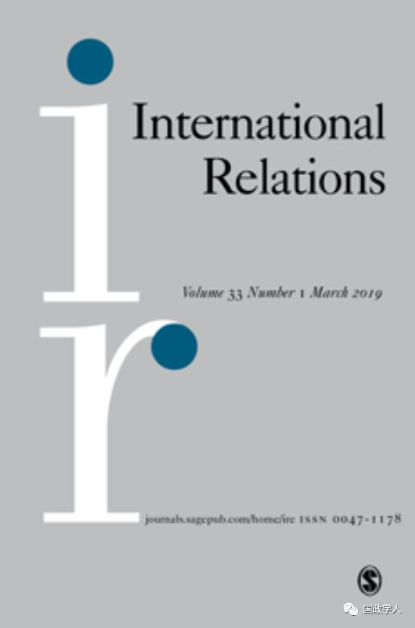

收录于合集 #理论研究 96个

简 介
【 作者 】
Dominic Tierney,美国最顶尖的文理学院之一的斯沃斯莫尔学院政治科学院副教授，外交政策研究院的资深委员。
【 编译 】 任珂瑶
【 审校 】彭小朵 刘孝玉
【 来源 】International Relations 32（2），127-148,2018.

核心观点
为什么冷战后众多国家不能与美国相抗衡？学者们忽视了一个重要的因素：美国崛起为世界超级大国的偶然性。美国成为世界超级大国并不是因为其有意增强了自身权力，而是因为它的对手——前苏联出人意料地崩塌解体。本研究阐明了，一国在获得权力中的责任是随着随之而来的权力制衡的结果而变化的。积极地、有意识地获取权力比起被动地取得权力来说，更容易引发维持均势的行为。因为积极主动者传递出进攻的意图，改变了存在于崛起国和潜在平衡者之间的二元权力平衡，激起了潜在平衡者想要转换不利地位的想法，从而采取维持均势的行动。
文章导读
文章提出了一个权力路径理论。该理论认为，国家可以通过改良军备、征服邻国或者通过结盟的形式来主动、有意地增强自身的实力。或者，一国也可以因为敌国出人意料地衰落而被动获得权力。比起被动的取得权力来说，通过积极主动的行为获得权力更容易引发维持均势的行为。因为积极主动者传递出进攻的意图，改变了存在于崛起国和潜在平衡者之间的二元权力平衡，激起了潜在平衡者想要转换不利地位的想法，使其采取维持均势的行动。
本文分为四个部分：第一部分，讨论了现实主义者关于制衡的观点。第二部分国家责任是如何促成制衡产生的。第三部分用冷战后美国取得世界霸权地位的例子对该理论进行了解析。第四部分总结全文并对将来进一步的研究提出建议。
** ** 第一部分：现实主义与制衡****
现实主义者对制衡的定义是由行为者的权力来界定的。这里的权力指的是一国相关的物质资源，包括军事力量、经济实力、人口规模等。而制衡则表示“一国集结军事力量以对别国的侵略行为进行威慑或在冲突中处于占上方的有利地位。”几乎所有的现实主义者都认为国际体系中不同权力分配状态是产生权力平衡的主要原因。首先，有时一国倾向于推卸责任，让另一国承担试探危险敌人的后果，在此情况下，该国不会首先采取制衡战略。 其次，当一国非常弱小而不能与其它大国抗衡时，它将选择与一个强大的或者具有威胁力的国家联盟，而非制衡。再次,Parent和Rosato认为，国家倾向于“内部制衡”而非“外部制衡”。因为它们不会全部依靠盟友来解决国家自身安全问题。最后，影响因素的多样性也会影响制衡行为的发生。比如，当这个体系是多极的，当在战争中坚持防守被视为最优策略时，当精英阶层和社会阶层分化严重时，都会抑制国家制衡行为的发生。
** ** ** 第二部分：责任问题******
解释威胁感知和制衡的另一种方法是分析一国获取权力的路径。现实主义者在讨论“国家获取权力的路径”这个问题时，大多关注的是一国拥有多少权力以及分析对手现在和将来的意图，而忽视了一国如何获取这些权力的问题。但事实是，一国通往权力之路因威胁感知和均衡情况的不同而有明显地区别。本文着重于关注国家在通往权力之路中的一个特殊变量：国家责任。这里，“责任”可以指一国的意图，一国想获得权力的欲望，或者是能使相关实力增加的可信度。国家对于产生战争或危机这些后果所承担的责任是很含糊的，可能从根本上来说就是一个感知的问题。责任不是一个二元变量，但是它的确存在，可以把它视为出现这些后果的部分原因。
主动获取权力比被动的权力取得更容易引发维持均势的行为，因为受以下三个因素的影响：意图和威胁感知、二元权力均衡以及不利地位的转换。
意图和对威胁的认知
人类大脑对有意造成的危险很敏感，这一现象有助于我们理解国际关系中的“威胁”。诸如侵略或者重整军备之类的主动增加权力的行为会给大脑暗示：这是一个有意造成的危险。从而大脑明白其进攻性的意图，产生威胁增加和需要采取行动使得权力均衡的认知。与此相反，当体系中因出现权力真空而使得一国的权力被动增加，此时，权力增加国是由于对手的瓦解而获利的，它并没有为自身权力的增加而付出任何努力。其它国家害怕新得到权力的国家因为权力的增加可能会采取进攻性的行为，虽然这种行为不一定发生，但就是这种不一定发生的可能性让其它强国采取两面下注的方法，维持权力均衡。
二元均势
当一国通过重振军队或征服的手段来主动地增加自身资源，这将会打破二元均衡的结构，对体系中的其它国家造成伤害。主动的权力增加可能会引发一个安全困境：一国增强其安全的行动将会自动地减少其它国家的安全。相比之下，在被动取得权力情景下出现的权力真空不会增加主动获取权力一国资源的绝对数量，因此，二元权力结构保持平稳。持续的二元均横是不具有威胁性的，也不会产生安全困境。
不利地位的转换
Daniel Kahneman 和Amos Tversky研究发现，处于“获得地位”的人往往表现得谨慎且不愿意冒险，而处于“不利地位”的人比较喜欢冒险，孤注一掷。学者们把这一研究结果运用于国际关系领域，发现处于权力“获得地位”的领导人行事小心谨慎，而处于权力“不利地位”的领导人则更喜欢冒险。当A国故意增强其实力时，B国处于不利地位。B国享有的全球资源相对减少，同时在与A国之间的二元权力平衡中处于不利地位。因此，B国将会调整政策，采取冒险策略，力图回到先前的权力地位，由此呈现出权力均衡的状态。
** ** ** ** 第三部分：冷战的结束********
冷战结束后，苏联解体，美国被动获得权力。中国认为美国对前苏联的解体不负有责任，并没有把美国视为一个威胁，因此中美关系得以维持。如果美国采取重整军备，或者是军事征服等主动方式获取霸权地位，就会向中国及其它国家释放进攻信号，从而激起其它国家维持均势的行为。美国取得权力的道路是被动的、不具威胁性的，它并没有改变美国与其它潜在平衡者之间的二元均势。事实上，美国从1986年到1999年之间的军费开支占GDP的比例从6.1%降到2.9%，减少了近一半。与此同时，其它国家占美国军费开支的比例却在增长：日本从5%增加到了17%，德国从8%增加到了14%，法国从8%增加到了17%，德国从10%增加到了13%，而中国也从10%增加到了13%。美国明显的军费削减降低了与其它国家发生二元安全困境的可能性。如果美国是通过重整军备来获得其霸权地位的话，将会改变美国与体系内其它每个国家之间的二元均势结构，损害到其它国家的利益，因此就会增加其它国家为维持均势而采取行动的可能性。美国被动取得权力的同时也没有把潜在均衡者置于不利的地位，不会引发它们采取转移不利地位以维持均势的行动。在某种意义上，所有潜在的均衡者因前苏联的解体获利，它们在全球的实力份额得到增加。举例来说，苏联从蒙古撤军，美国与前苏联签署了武器控制协议，改善了中国的安全环境，使中国直接获益。又比如德国和日本，它们是冷战中的战胜国。柏林和东京希望在美国领导下的体系中继续扮演附属国的角色，这与权力既得者讨厌冒险的性格是相符合的。
** ** ** ** 第四部分：总结********
通往权力的不同道路，明显地影响着维持均势的行为。主动获取权力比被动的权力取得更容易引发权力均衡的行为。因为主动获取权力者释放了进攻性的信号，打破了二元权力均衡，激起了潜在平衡者想要转换不利地位的想法，促使潜在平衡者采取维持均势的行动。冷战后，诸如中国之类的潜在平衡者并不认为华盛顿应该对苏联的解体负责，因此，美国权力的被动取得是不具威胁性的，并没有改变二元权力结构，没有引发他国转换不利地位的行动。
在未来的研究中，期待学者们继续探讨不同权力取得路径之间的关系以及在不同情境下各国将采取什么行动来维持均势。
扫描下方小程序码查看原文p df
本文由国政学人微信公众平台编译首发
更多阅读
国政学人 （ID：guozhengxueren)
为方便学人及时阅读高质量文章
别忘把国政学人设置 星标 哦~


国政学人
支持学术公益与知识传播
微信扫一扫赞赏作者 __赞赏
已喜欢，对作者说句悄悄话
取消 __
发送给作者
发送
最多40字，当前共字
上一页 1/3 下一页
长按二维码向我转账
支持学术公益与知识传播
受苹果公司新规定影响，微信 iOS 版的赞赏功能被关闭，可通过二维码转账支持公众号。